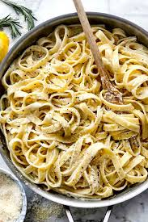

Fettuccine

Ingredient
- 500 g fettuccine
- 100 g parmezaan
- 50 g boter
- zout
- zwarte peper
Bereiding
- Kook de fettuccine beetgaar in gezouten water zoals aangegeven op de verpakking
- Giet de pasta af en bewaar een kop van het kookvocht
- Doe de pasta terug in de pan samen met de boter en de helft van de parmezaan
- Verwarm even zodat de boter is gesmolten
- Voeg wat van het kookvocht toe zodat je een mooie glanzende saus verkrijgt
- Doe de pasta in de borden en kruid met versgemalen zwarte peper
- Serveer met de rest van de parmezaan